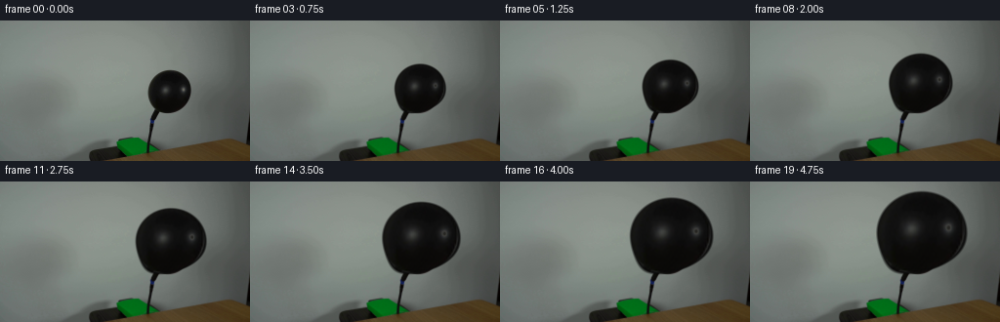
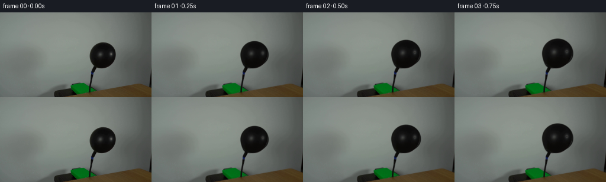
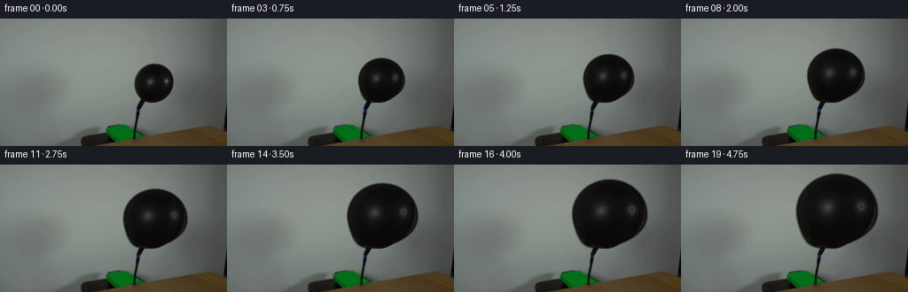
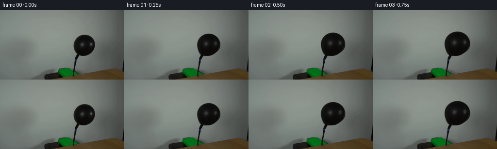

CODING AGENTS AS PIXEL WORLD MODELS
traex/GPT-5.6-Sol · 0037
点击播放 · 原生 RGB 像素
逐轮保存的候选
回放视频、检查图与代码变化。
每份候选均可单独播放。实际图片检查记录在下方工具轨迹中。
候选 01播放与检查图
点击播放 · 原生 RGB 像素


展开代码变化
--- 上一保存版本
+++ 本次保存版本
@@ -0,0 +1,108 @@
+from pathlib import Path
+import numpy as np
+import cv2
+from PIL import Image
+import artifact_io
+
+# Analytic, locked-camera reconstruction of an inflating latex balloon. The
+# photograph is used both as the immutable plate and as the source of the
+# balloon's fine-scale material appearance.
+CASE_DIR = Path(__file__).resolve().parent
+N, H, W = 20, 144, 256
+SS = 4
+
+
+def smoothstep(a, b, x):
+ z = np.clip((x-a)/(b-a), 0.0, 1.0)
+ return z*z*(3.0-2.0*z)
+
+
+def balloon_frame(plate, frame_index):
+ if frame_index == 0:
+ return plate.copy()
+
+ # Steady pumping: a continuous, monotonic increase in both dimensions.
+ p = frame_index / (N-1.0)
+ rx = 23.0 + 24.0*p
+ ry = 22.5 + 20.5*p
+ cx = 174.0 + 2.0*p
+ bottom = 95.5 # the tied end remains on the hose
+ cy = bottom - ry
+ lean = 8.0 + 8.0*p # tied balloon leans right of the hose
+
+ hs, ws = H*SS, W*SS
+ yy, xx = np.mgrid[0:hs, 0:ws].astype(np.float32)
+ xx = (xx + 0.5)/SS
+ yy = (yy + 0.5)/SS
+
+ v = (yy-cy)/ry
+ shift = -lean*np.clip(v, 0, 1)**3
+ u = (xx-cx-shift)/rx
+ d2 = u*u + v*v
+
+ # A sharp high-resolution silhouette, softened only over one output pixel.
+ aa = np.clip((1.0125-d2)*SS*2.5, 0.0, 1.0)
+ inside = d2 <= 1.0
+ z = np.sqrt(np.maximum(0.0, 1.0-d2))
+
+ # Map normalized surface coordinates back to the photographed initial
+ # balloon. This carries its real mottling and reflected laboratory lights
+ # through the expansion rather than inventing a flat black disk.
+ src_shift = -8.0*np.clip(v, 0, 1)**3
+ mapx = (174.0 + 23.0*u + src_shift).astype(np.float32)
+ mapy = (73.0 + 22.5*v).astype(np.float32)
+ photographed = cv2.remap(plate, mapx, mapy, cv2.INTER_CUBIC,
+ borderMode=cv2.BORDER_REFLECT_101).astype(np.float32)
+
+ # Physically motivated black-latex shading: dim diffuse response, a broad
+ # softbox reflection at upper left, a narrow secondary glint, and Fresnel
+ # lift close to the contour. All texture is fixed in material coordinates
+ # so nothing crawls or flickers as the balloon grows.
+ nx, ny, nz = u, v, z
+ lx, ly, lz = -0.56, -0.58, 0.59
+ lambert = np.maximum(0.0, nx*lx + ny*ly + nz*lz)
+ fresnel = np.power(np.clip(1.0-z, 0, 1), 2.3)
+ softbox = np.exp(-(((u+0.28)/0.25)**2 + ((v+0.20)/0.48)**2)*2.1)
+ glint = np.exp(-(((u+0.43)/0.080)**2 + ((v+0.24)/0.22)**2)*2.0)
+ lower_fold = np.exp(-(((u+0.10)/0.22)**2 + ((v-0.72)/0.10)**2)*2.0)
+ grain = (1.0*np.sin(47*u+13*v) + 0.65*np.sin(91*u-39*v)
+ + 0.45*np.sin(163*u+71*v))
+ lum = 5.5 + 9.5*lambert + 8.0*fresnel + 19.0*softbox + 15.0*glint
+ lum += 5.0*lower_fold + grain
+ analytic = np.empty_like(photographed)
+ analytic[..., 0] = lum*1.02
+ analytic[..., 1] = lum*1.00
+ analytic[..., 2] = lum*0.97
+
+ # Trust the real sampled material most in the central area; use analytic
+ # shading at the changing contour, where source pixels include background.
+ source_weight = 0.78*(1.0-smoothstep(0.70, 0.98, d2))
+ # Dark latex should never inherit bright wall samples due to interpolation.
+ photo_luma = photographed.mean(axis=2)
+ valid_dark = 1.0-smoothstep(72.0, 108.0, photo_luma)
+ source_weight *= (0.35 + 0.65*valid_dark)
+ color = analytic*(1-source_weight[..., None]) + photographed*source_weight[..., None]
+
+ # Slight inflation-dependent tension smooths deep wrinkles while leaving
+ # recognizable highlights. Clamp to plausible black-rubber reflectance.
+ color = np.clip(color, 2, 78)
+ color[~inside] = 0
+
+ # Composite against an upscaled copy of the exact locked-off plate.
+ back = cv2.resize(plate, (ws, hs), interpolation=cv2.INTER_CUBIC).astype(np.float32)
+ out_hi = back*(1-aa[..., None]) + color*aa[..., None]
+ out = cv2.resize(out_hi, (W, H), interpolation=cv2.INTER_AREA)
+ return np.clip(np.rint(out), 0, 255).astype(np.uint8)
+
+
+def main():
+ plate = np.asarray(Image.open(CASE_DIR/'first_frame.png').convert('RGB'), dtype=np.uint8)
+ assert plate.shape == (H, W, 3)
+ frames = np.stack([balloon_frame(plate, i) for i in range(N)], axis=0)
+ # Contract-critical: preserve the supplied photograph byte-for-byte.
+ frames[0] = plate
+ artifact_io.save(frames, CASE_DIR)
+
+
+if __name__ == '__main__':
+ main()
候选 02播放与检查图
点击播放 · 原生 RGB 像素


展开代码变化
--- 上一保存版本
+++ 本次保存版本
@@ -88,10 +88,12 @@
color = np.clip(color, 2, 78)
color[~inside] = 0
- # Composite against an upscaled copy of the exact locked-off plate.
- back = cv2.resize(plate, (ws, hs), interpolation=cv2.INTER_CUBIC).astype(np.float32)
- out_hi = back*(1-aa[..., None]) + color*aa[..., None]
- out = cv2.resize(out_hi, (W, H), interpolation=cv2.INTER_AREA)
+ # Downsample premultiplied foreground and matte separately, then composite
+ # on the original plate. This keeps every background pixel perfectly fixed.
+ alpha = cv2.resize(aa, (W, H), interpolation=cv2.INTER_AREA)
+ premul = cv2.resize(color*aa[..., None], (W, H), interpolation=cv2.INTER_AREA)
+ foreground = premul / np.maximum(alpha[..., None], 1e-6)
+ out = plate.astype(np.float32)*(1-alpha[..., None]) + foreground*alpha[..., None]
return np.clip(np.rint(out), 0, 255).astype(np.uint8)
可观测工具轨迹
实际执行的命令与返回图片。
命令 1exit 0
/bin/bash -lc "cat prompt.txt && printf '\\n---RULES---\\n' && cat GENERATION_RULES.md"
命令 2exit 127
/bin/bash -lc "find . -maxdepth 2 -type f -printf '%p %s bytes\\n' | sort && file first_frame.png"
命令 3exit 0
/bin/bash -lc "python3 - <<'PY'
from PIL import Image
import numpy as np
im=np.array(Image.open('first_frame.png').convert('RGB'))
print(im.shape, im.min((0,1)), im.max((0,1)), im.mean((0,1)).round(1))
# print coarse 4x4 average with symbols categorized based hsv/luma
import cv2
small=cv2.resize(im,(64,36),interpolation=cv2.INTER_AREA)
hsv=cv2.cvtColor(small,cv2.COLOR_RGB2HSV)
for y in range(36):
s=''
for x in range(64):
r,g,b=small[y,x]; h,ss,v=hsv[y,x]
if v<35: c='@'
elif v<65: c='#'
elif v<100:c='X'
elif v<140:c='x'
elif v<180:c='+'
elif v<215:c='.'
else:c=' '
# hue classes only saturated
if ss>80 and v>60:
if h<12 or h>170:c='R'
elif h<28:c='O'
elif h<45:c='Y'
elif h<90:c='G'
elif h<135:c='B'
else:c='M'
s+=c
print(s)
PY"命令 4exit 0
/bin/bash -lc "python3 - <<'PY'
from PIL import Image
import numpy as np, cv2
im=np.array(Image.open('first_frame.png').convert('RGB'))
g=cv2.cvtColor(im,cv2.COLOR_RGB2GRAY)
for th in [15,20,25,30,35,40,45,50,55,60,70,80,90]:
m=(g<th).astype('uint8')
n,lab,st,cen=cv2.connectedComponentsWithStats(m,8)
comps=[]
for i in range(1,n):
x,y,w,h,a=st[i]
if a>=5:comps.append((a,x,y,w,h,tuple(np.round(cen[i],1))))
print('\\nth',th,'total',m.sum(),'comps',sorted(comps,reverse=True)[:10])
# Row dark runs th50
for y in range(0,144,4):
xs=np.where(g[y]<50)[0]
runs=[]
if len(xs):
s=p=xs[0]
for q in xs[1:]:
if q>p+1:runs.append((s,p));s=q
p=q
runs.append((s,p))
print(y,runs)
PY"命令 5exit 0
/bin/bash -lc "python3 - <<'PY'
from PIL import Image
import numpy as np
im=np.array(Image.open('first_frame.png').convert('RGB'))
for y in [0,20,40,50,60,70,80,90,100,110,120,128,132,136,140,143]:
print('y',y,[(x,tuple(im[y,x])) for x in range(0,256,16)])
PY"命令 6exit 0
/bin/bash -lc "python3 - <<'PY'
from PIL import Image
import numpy as np,cv2
im=np.array(Image.open('first_frame.png').convert('RGB')); g=cv2.cvtColor(im,cv2.COLOR_RGB2GRAY)
for th in [70,80,90,100,110]:
print('TH',th)
for y in range(45,110,2):
xs=np.where(g[y,135:210]<th)[0]+135
if len(xs): print(f'{y:3}',xs.min(),xs.max(),len(xs))
PY"命令 7exit 0
/bin/bash -lc "python3 - <<'PY'
from PIL import Image
import numpy as np,cv2
im=np.array(Image.open('first_frame.png').convert('RGB')); g=cv2.cvtColor(im,cv2.COLOR_RGB2GRAY)
for y in range(46,112):
xs=np.where(g[y]<80)[0]
ints=[]
if len(xs):
s=p=xs[0]
for q in xs[1:]:
if q>p+1:ints.append((s,p));s=q
p=q
ints.append((s,p))
print(y,ints)
PY"命令 8exit 0
/bin/bash -lc 'cat artifact_io.py'
命令 9exit 0
/bin/bash -lc "python3 - <<'PY'
from PIL import Image
import numpy as np
im=np.array(Image.open('first_frame.png').convert('RGB'))
for y in range(52,95,4):
print(y, ['%3d'%im[y,x].mean() for x in range(152,197,4)])
PY"命令 10exit 0
/bin/bash -lc "cat > generate.py <<'PY'
from pathlib import Path
import numpy as np
import cv2
from PIL import Image
import artifact_io
# Analytic, locked-camera reconstruction of an inflating latex balloon. The
# photograph is used both as the immutable plate and as the source of the
# balloon's fine-scale material appearance.
CASE_DIR = Path(__file__).resolve().parent
N, H, W = 20, 144, 256
SS = 4
def smoothstep(a, b, x):
z = np.clip((x-a)/(b-a), 0.0, 1.0)
return z*z*(3.0-2.0*z)
def balloon_frame(plate, frame_index):
if frame_index == 0:
return plate.copy()
# Steady pumping: a continuous, monotonic increase in both dimensions.
p = frame_index / (N-1.0)
rx = 23.0 + 24.0*p
ry = 22.5 + 20.5*p
cx = 174.0 + 2.0*p
bottom = 95.5 # the tied end remains on the hose
cy = bottom - ry
lean = 8.0 + 8.0*p # tied balloon leans right of the hose
hs, ws = H*SS, W*SS
yy, xx = np.mgrid[0:hs, 0:ws].astype(np.float32)
xx = (xx + 0.5)/SS
yy = (yy + 0.5)/SS
v = (yy-cy)/ry
shift = -lean*np.clip(v, 0, 1)**3
u = (xx-cx-shift)/rx
d2 = u*u + v*v
# A sharp high-resolution silhouette, softened only over one output pixel.
aa = np.clip((1.0125-d2)*SS*2.5, 0.0, 1.0)
inside = d2 <= 1.0
z = np.sqrt(np.maximum(0.0, 1.0-d2))
# Map normalized surface coordinates back to the photographed initial
# balloon. This carries its real mottling and reflected laboratory lights
# through the expansion rather than inventing a flat black disk.
src_shift = -8.0*np.clip(v, 0, 1)**3
mapx = (174.0 + 23.0*u + src_shift).astype(np.float32)
mapy = (73.0 + 22.5*v).astype(np.float32)
photographed = cv2.remap(plate, mapx, mapy, cv2.INTER_CUBIC,
borderMode=cv2.BORDER_REFLECT_101).astype(np.float32)
# Physically motivated black-latex shading: dim diffuse response, a broad
# softbox reflection at upper left, a narrow secondary glint, and Fresnel
# lift close to the contour. All texture is fixed in material coordinates
# so nothing crawls or flickers as the balloon grows.
nx, ny, nz = u, v, z
lx, ly, lz = -0.56, -0.58, 0.59
lambert = np.maximum(0.0, nx*lx + ny*ly + nz*lz)
fresnel = np.power(np.clip(1.0-z, 0, 1), 2.3)
softbox = np.exp(-(((u+0.28)/0.25)**2 + ((v+0.20)/0.48)**2)*2.1)
glint = np.exp(-(((u+0.43)/0.080)**2 + ((v+0.24)/0.22)**2)*2.0)
lower_fold = np.exp(-(((u+0.10)/0.22)**2 + ((v-0.72)/0.10)**2)*2.0)
grain = (1.0*np.sin(47*u+13*v) + 0.65*np.sin(91*u-39*v)
+ 0.45*np.sin(163*u+71*v))
lum = 5.5 + 9.5*lambert + 8.0*fresnel + 19.0*softbox + 15.0*glint
lum += 5.0*lower_fold + grain
analytic = np.empty_like(photographed)
analytic[..., 0] = lum*1.02
analytic[..., 1] = lum*1.00
analytic[..., 2] = lum*0.97
# Trust the real sampled material most in the central area; use analytic
# shading at the changing contour, where source pixels include background.
source_weight = 0.78*(1.0-smoothstep(0.70, 0.98, d2))
# Dark latex should never inherit bright wall samples due to interpolation.
photo_luma = photographed.mean(axis=2)
valid_dark = 1.0-smoothstep(72.0, 108.0, photo_luma)
source_weight *= (0.35 + 0.65*valid_dark)
color = analytic*(1-source_weight[..., None]) + photographed*source_weight[..., None]
# Slight inflation-dependent tension smooths deep wrinkles while leaving
# recognizable highlights. Clamp to plausible black-rubber reflectance.
color = np.clip(color, 2, 78)
color[~inside] = 0
# Composite against an upscaled copy of the exact locked-off plate.
back = cv2.resize(plate, (ws, hs), interpolation=cv2.INTER_CUBIC).astype(np.float32)
out_hi = back*(1-aa[..., None]) + color*aa[..., None]
out = cv2.resize(out_hi, (W, H), interpolation=cv2.INTER_AREA)
return np.clip(np.rint(out), 0, 255).astype(np.uint8)
def main():
plate = np.asarray(Image.open(CASE_DIR/'first_frame.png').convert('RGB'), dtype=np.uint8)
assert plate.shape == (H, W, 3)
frames = np.stack([balloon_frame(plate, i) for i in range(N)], axis=0)
# Contract-critical: preserve the supplied photograph byte-for-byte.
frames[0] = plate
artifact_io.save(frames, CASE_DIR)
if __name__ == '__main__':
main()
PY
python3 generate.py
python3 - <<'PY'
from PIL import Image
import numpy as np
p=np.array(Image.open('first_frame.png').convert('RGB'))
f=np.stack([np.array(Image.open(f'frames/{i:02d}.png')) for i in range(20)])
print('shape/dtype',f.shape,f.dtype,'frame0 exact',np.array_equal(f[0],p))
for i in [0,1,2,4,8,12,16,19]:
d=np.any(f[i]"'!=p,axis=2)
ys,xs=np.where(d)
print(i, '"'changed',d.sum(), 'bbox',None if not len(xs) else (xs.min(),ys.min(),xs.max(),ys.max()), 'dark',np.sum(f[i].mean(2)<65))
PY"命令 11exit 0
/bin/bash -lc "python3 - <<'PY'
p='generate.py'
s=open(p).read()
s=s.replace(\" # Composite against an upscaled copy of the exact locked-off plate.\\n back = cv2.resize(plate, (ws, hs), interpolation=cv2.INTER_CUBIC).astype(np.float32)\\n out_hi = back*(1-aa[..., None]) + color*aa[..., None]\\n out = cv2.resize(out_hi, (W, H), interpolation=cv2.INTER_AREA)\\n return np.clip(np.rint(out), 0, 255).astype(np.uint8)\",\" # Downsample premultiplied foreground and matte separately, then composite\\n # on the original plate. This keeps every background pixel perfectly fixed.\\n alpha = cv2.resize(aa, (W, H), interpolation=cv2.INTER_AREA)\\n premul = cv2.resize(color*aa[..., None], (W, H), interpolation=cv2.INTER_AREA)\\n foreground = premul / np.maximum(alpha[..., None], 1e-6)\\n out = plate.astype(np.float32)*(1-alpha[..., None]) + foreground*alpha[..., None]\\n return np.clip(np.rint(out), 0, 255).astype(np.uint8)\")
open(p,'w').write(s)
PY
python3 generate.py
python3 - <<'PY'
from PIL import Image
import numpy as np
p=np.array(Image.open('first_frame.png').convert('RGB'))
for i in [0,1,2,4,8,12,16,19]:
f=np.array(Image.open(f'frames/{i:02d}.png')); d=np.any(f"'!=p,2); ys,xs=np.where(d)
print(i,d.sum(),None if not len(xs) else (xs.min(),ys.min(),xs.max(),ys.max()),np.sum(f.mean(2)<65))
PY'命令 12exit 0
/bin/bash -lc "python3 - <<'PY'
from PIL import Image
import numpy as np, hashlib
fs=np.stack([np.array(Image.open(f'frames/{i:02d}.png').convert('RGB')) for i in range(20)])
print('frame0',hashlib.sha256(fs[0].tobytes()).hexdigest())
print('input ',hashlib.sha256(np.array(Image.open('first_frame.png').convert('RGB')).tobytes()).hexdigest())
print('mean absolute interframe:',[round(float(np.abs(fs[i].astype(float)-fs[i-1]).mean()),3) for i in range(1,20)])
print('unique frames',len({x.tobytes() for x in fs}))
z=np.load('pixels.npz')['pixels']; print('archive',z.shape,z.dtype,'files ok',len(list(__import__('pathlib').Path('frames').glob('*.png'))))
PY
ls -lh generate.py pixels.npz inspection.png index.html | cat"保存候选 2 份；完成命令 12 次；可验证图片返回 0 张。原始 API 响应与完整日志保留在本地。